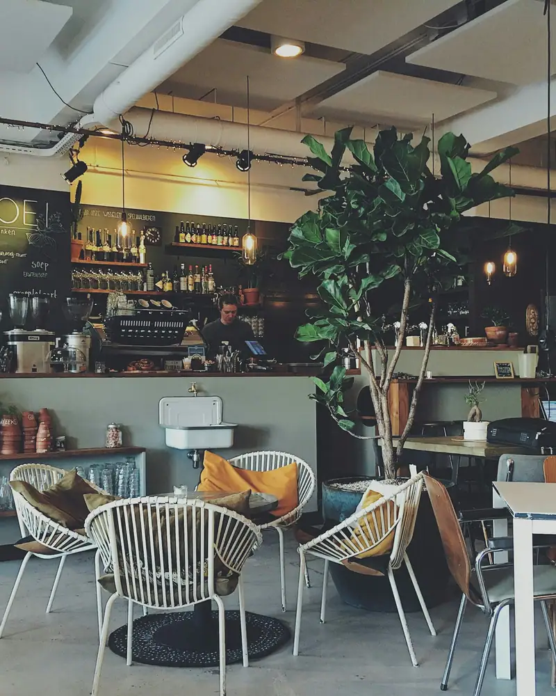
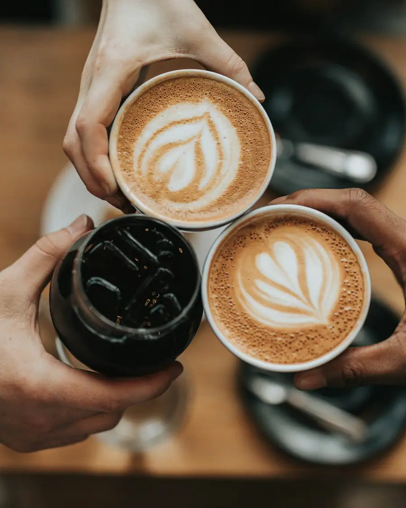
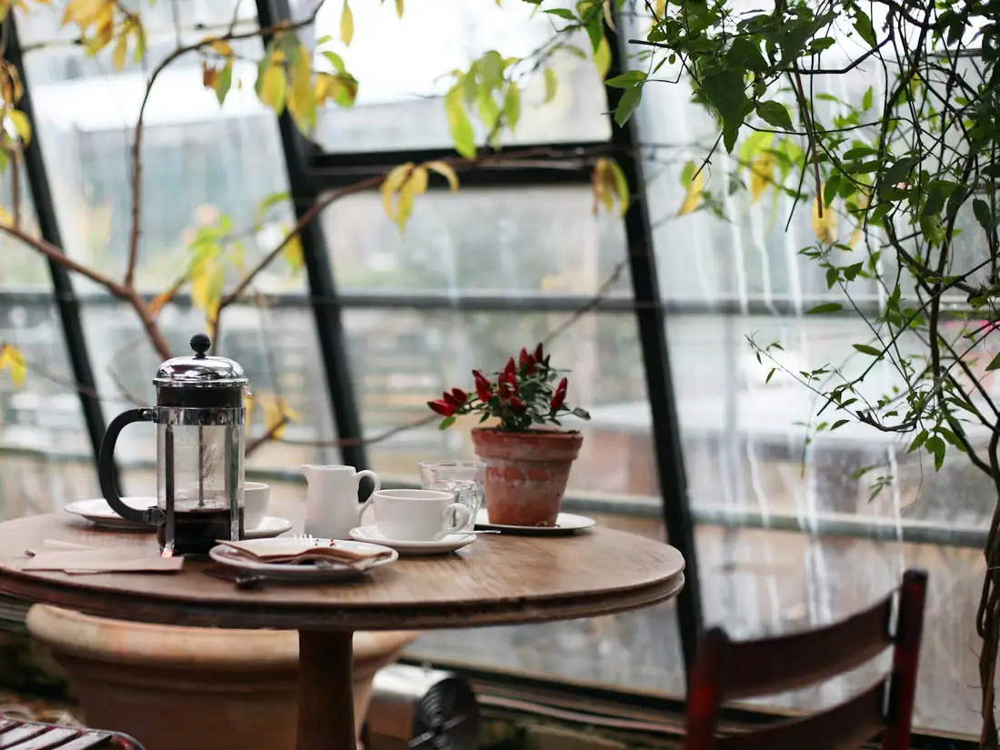
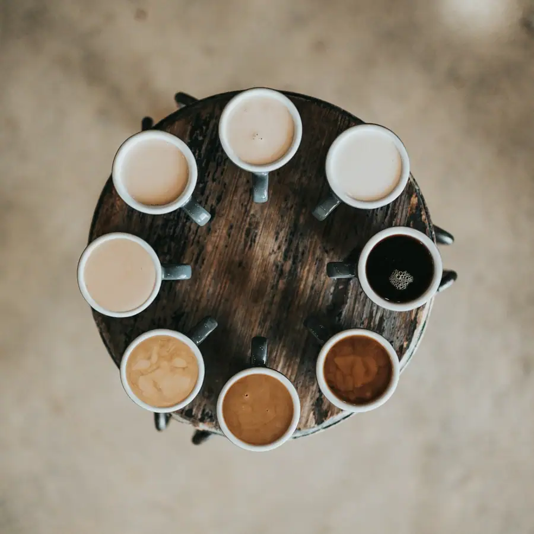
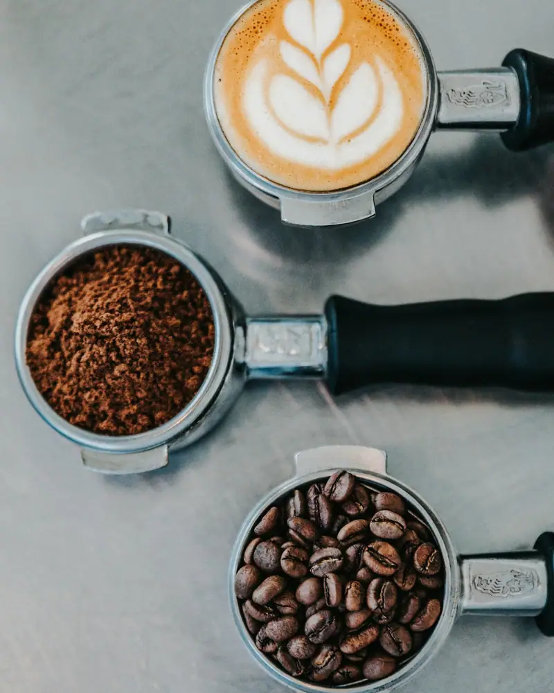

A counter in Bahary
Coffee before the corniche gets loud.
Bahari Beans is a small counter on the Bahary side of Alexandria. Espresso, Turkish coffee, and a few things from the oven. Walk in and collect it on your way along El Gaish Road.
The door
Come by
Open now, until 23:00.
Sunday – Thursday
8:00–23:00
Friday and Saturday
9:00–24:00
Last order twenty minutes before close.

Map placeholder
8 Haret El Foula, off El Gaish Road, Bahary, Alexandria
Fictional address, for this concept.
This block is where a map embed would sit. On a live site it would be an OpenStreetMap frame for the real door.
Instagram strip
Four frames from the counter
Reference photos in a square crop. There is no account behind them.


